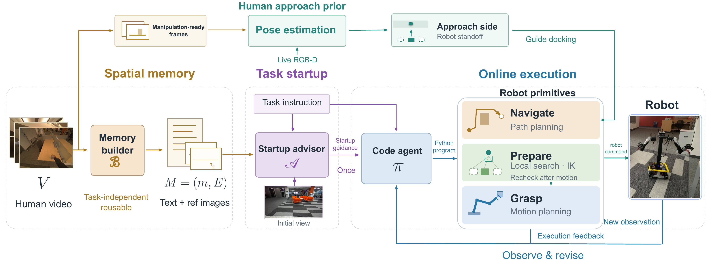
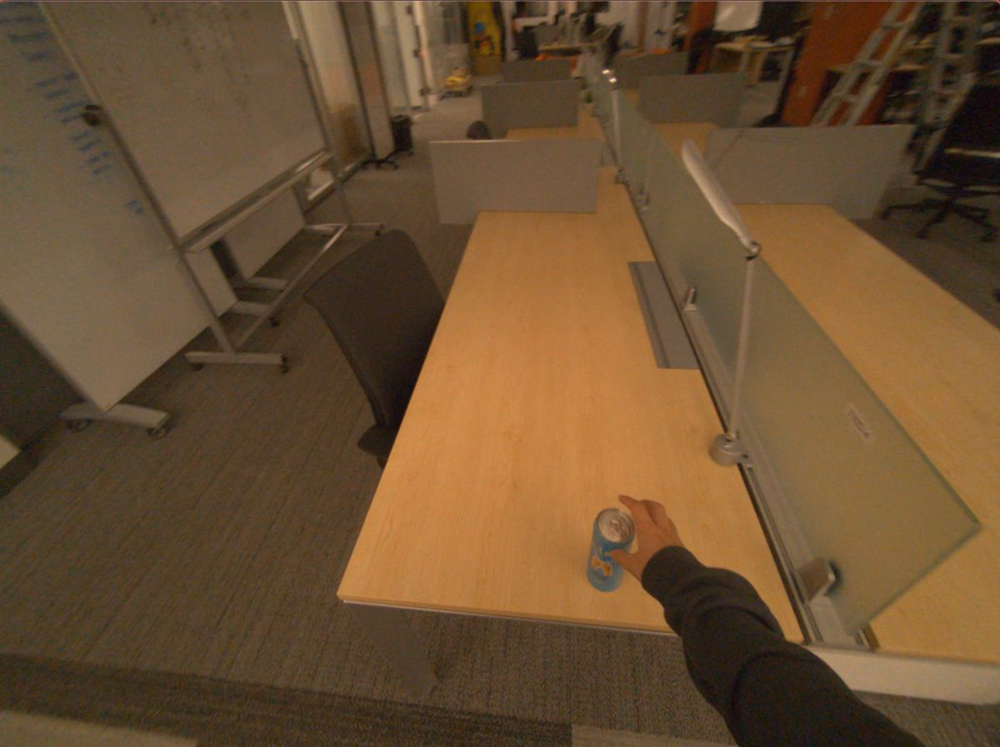
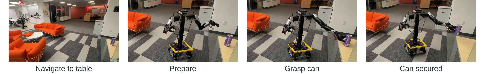
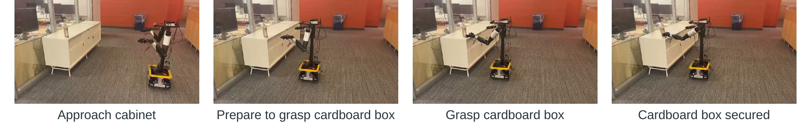
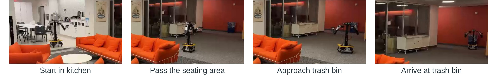
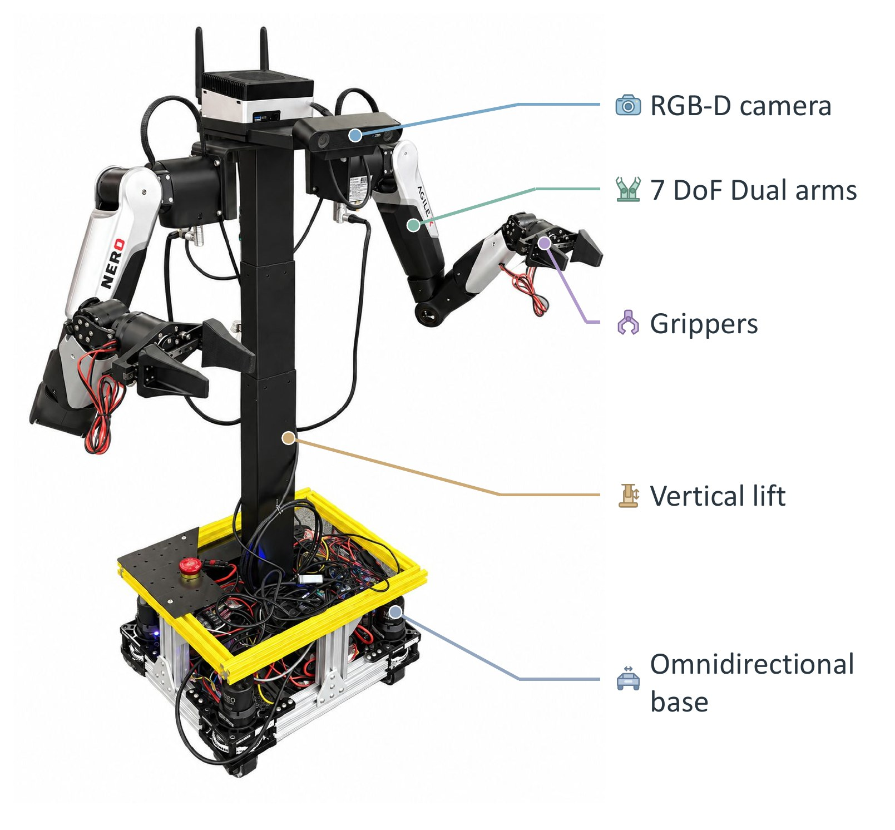

Where to search
An offline builder turns a passive egocentric recording into a reusable spatial memory: places, landmarks, connections, and where small objects sit. The same memory serves every later task.
ICRA 2027 · Under review
Affiliation withheld for review
An offline builder turns a passive egocentric recording into a reusable spatial memory: places, landmarks, connections, and where small objects sit. The same memory serves every later task.
The frame just before a person reaches for an object shows where they stood. MoCAP recovers that stance and uses it to choose the side of the object the robot approaches from.
A closed-loop code-as-policy agent writes short Python programs over primitives that check every motion against live geometry, IK and collisions, then revises from feedback.
Passive human videos of everyday activity offer robots access to a massive amount of human experience without requiring a demonstration for each task. However, using this experience requires recovering knowledge from unstructured video recordings and adapting it to a different body (i.e., the robot). To overcome these challenges, we present mobile code-as-policy (MoCAP), an agentic framework that turns passive human video recordings into guidance for an end-to-end mobile manipulation policy. MoCAP extracts spatial memory and cues of how people prepare to interact with objects, which inform navigation and the search for a manipulation-ready configuration. Guided by passive human experience and current observations, MoCAP uses a closed-loop code-as-policy to coordinate planning and tool use primitives to solve motions under the robot’s geometry and kinematic constraints. On a real mobile manipulator, MoCAP achieves 80% success on each of two mobile manipulation tasks in an indoor environment whereas existing approaches cannot succeed at the task. Video-derived spatial memory improves object-navigation success from 70% to 100%, and human approach prior raises the rate of finding a reachable base pose from 0% to 100% at an unfavorable start location.
A recording of everyday activity is processed once, before any task is given. When a request arrives, a startup advisor connects the memory to what the robot currently sees. A code agent then drives the robot through primitives that resolve every motion for the robot’s own body.

An offline builder watches the recording and writes a navigation-oriented text memory m that cites video timestamps, then extracts up to 32 reference frames E at those timestamps. The memory keeps places, connections and landmarks, plus small objects with their support surface and neighbourhood. It also keeps transition cues: where to turn, which landmark should come into view next, and how to recognise a revisited place. Uncertain identities are marked as uncertain.
A separate pass finds manipulation events. Low-motion windows are labeled by a VLM with the object, the hand, the last frame before reaching, and first contact. For each event MoCAP saves the ready frame, a view 2 s earlier, and the contact frame.
None of this processing knows the downstream tasks. The same recording is reused for every request.

At startup the advisor reads the memory, the instruction and the first robot image. It returns the robot’s likely location, two to four navigation subgoals with progress cues, and what the target looks like. This runs once per task.
The code agent then writes one short program per turn:
ct = π(q, a0, õt, ht), (rt, ot+1) = ExecuteObserve(ct)
A failed primitive interrupts the rest of the program. Its diagnostics and a fresh observation go back to the agent, which can then change its approach. Primitives cover SAM 3 + depth target localisation, Nav2 docking with fresh-perception arrival checks, bounded turns and translations for search and recovery, GraspGen-X grasps, and cuRobo whole-arm planning.
# Target is visible: dock on the side the human prior suggests
dock = dock_to_visible_object("can")
arm = dock.get("suggested_arm", "right")
# Search nearby base poses for one with a collision-free, IK-feasible grasp
prepare_for_manipulation("can", arm=arm)
position, quat = sample_grasp_pose("can", arm=arm)
open_gripper(arm=arm)
goto_grasp_pose("can", position, quat, arm=arm)
close_gripper(arm=arm)
lift_grasped_object(arm=arm)
finish("can grasped and held")If prepare_for_manipulation fails, the remaining calls are skipped and the agent sees why.
At docking time, MoCAP retrieves the recorded event for the target. VGGT jointly processes the live robot image and the event’s earlier and ready views. It estimates intrinsics and relative poses, so the human camera needs no calibration. Live depth fixes the metric scale. Estimates with an unstable scale or an implausible head height (outside 1.2–2.1 m) are rejected, and the robot falls back to its own arrival direction.
The camera centre is projected to the floor, and the stance is placed 0.30 m behind it. The bearing from the object to the stance becomes the approach side. Human and robot reach differ, so only the direction transfers. The robot uses its own standoff, and local IK checks decide the final pose. The human’s hand breaks ties when MoCAP suggests which arm to use.
Arriving near an object does not mean the arm can reach it. The preparation primitive tests a 7×7×7 grid of planar adjustments around the current pose: forward −0.10 to 0.20 m, lateral ±0.15 m, yaw ±15°. Every grasp is moved into each candidate frame and screened by gripper swept-volume collision checks and Mink IK. This avoids running a full trajectory plan for every virtual pose.
Candidates are ranked lexicographically. Small base motion comes first, then the number of feasible grasps, then robustness to ±1 cm / ±1° arrival error. The chosen goal is executed, and grasps are re-checked from fresh observations at the pose actually reached. cuRobo then plans the whole-arm motion.
All experiments run on the real YOR robot: an omnidirectional base, a vertical lift, two 7-DoF AgileX Nero arms, and a ZED 2i RGB-D camera. The human recording was made with Aria Gen 2 glasses, using RGB only. A single memory built from it is shared by every task.
CaP-X is a coding-agent framework for manipulation. We run it through its mobile-manipulator (R1Pro) API, ported to our robot with the same instructions, model and time limit. Its standing poses come from geometric heuristics that assume a simulator will reject collisions. On the real robot, its base goals fell behind or onto the cabinet. In the can task, in-place rotation never brought the can into view: 0 detections in 144 queries.
Grasp the cardboard box on the white cabinet, 4×. CaP-X was stopped before contact.
| Task | Method | Successes | Success rate |
|---|---|---|---|
| Grasp box | MoCAP (ours) | 4/5 | |
| CaP-X | 0/5 | ||
| Grasp can | MoCAP (ours) | 4/5 | |
| CaP-X | 0/5 |
The robot starts in the kitchen with the blue trash bin out of view. An episode succeeds if the base stops within 1 m of the bin and the bin is visible. CoW and ApexNav cannot use an offline prior, so the fair comparison for them is MoCAP without the memory. CoW stopped at a white kitchen bin with a blue notice on it. ApexNav either saw the blue bin but kept exploring, or settled on a black shredder.
Navigate to the blue trash bin from the kitchen, 4×.
| Method | Success | Within 180 s | Within 300 s |
|---|---|---|---|
| MoCAP (ours) | |||
| MoCAP (no prior) | |||
| ApexNav | |||
| CoW |
The robot starts from A, B or C around a desk. The recorded human interaction happened on the C side. Each trial runs docking and then local preparation without the code agent, so there is no chance to retry from another side. The two conditions differ only in the approach direction given to docking. Success means at least one grasp passes collision and IK checks from some nearby base pose.
| Start | Without prior | With prior |
|---|---|---|
| A | ||
| B | ||
| C | ||
| All |
From C the robot’s own arrival direction already matches the human stance, so the prior adds nothing there. The pooled difference is not statistically significant at this sample size. The effect to look at is start A.
Same start, same docking and local search, 4×. Without the prior, no IK-feasible base pose is found. With it, the robot docks on the human side and finds one.
Each row shows keyframes from one continuous run, left to right.




The experiments use YOR, a low-cost open mobile manipulator. A Jetson Orin NX runs the agent runtime and the perception and planning services. Raspberry Pi services control the base and arms. The code agent and the offline memory builder both use GPT-5.6.
The evaluation covers one environment, one recording and three target objects, with five to ten trials per condition. It shows that the approach is feasible, but it does not show that it generalises. It is still open whether the memory and approach priors transfer across rooms, recorders, and objects that never appear in the recording. Manipulation in this work is limited to grasping and lifting.
@article{mocap2027,
title = {MoCAP: Mobile Code-As-Policies for Zero-Shot Mobile
Manipulation from Passive Human Videos},
author = {Anonymous},
journal = {arXiv preprint},
year = {2026}
}